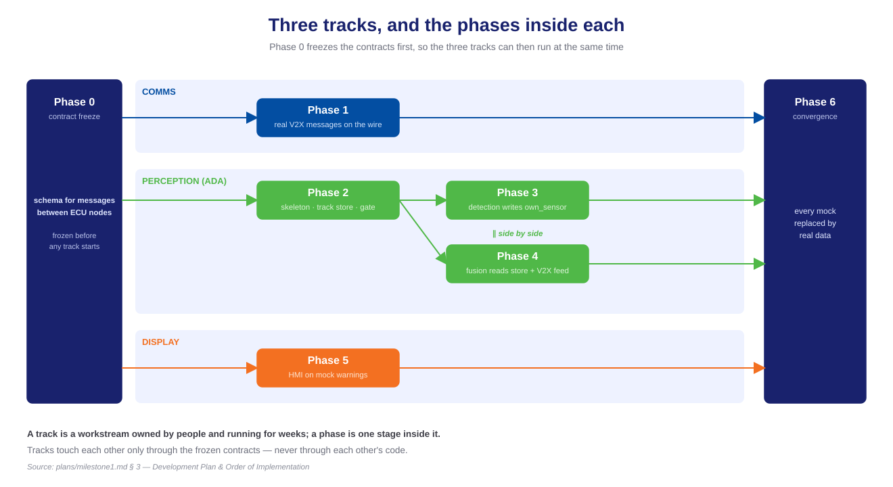
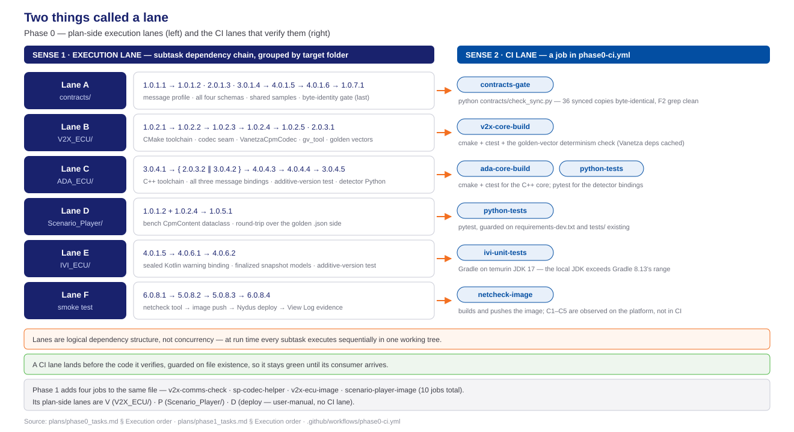
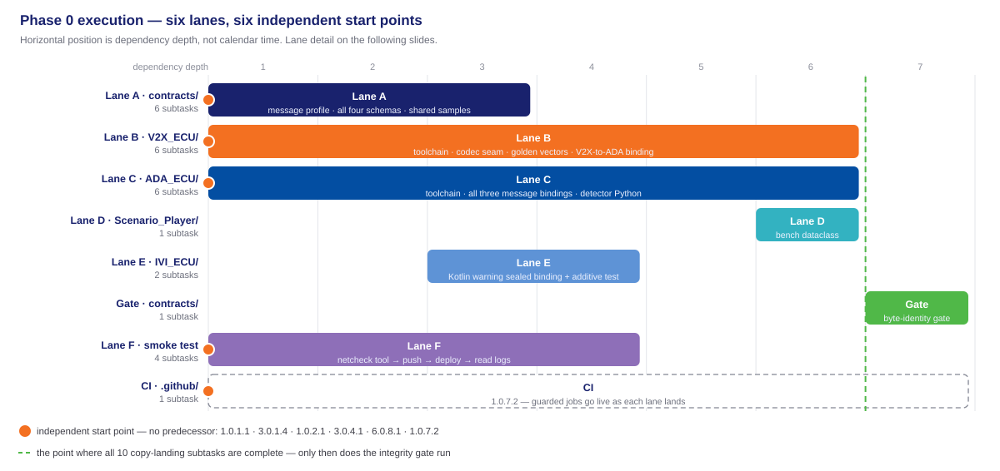
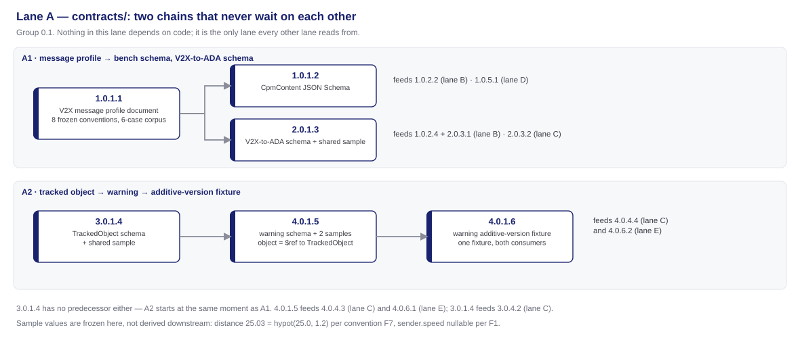
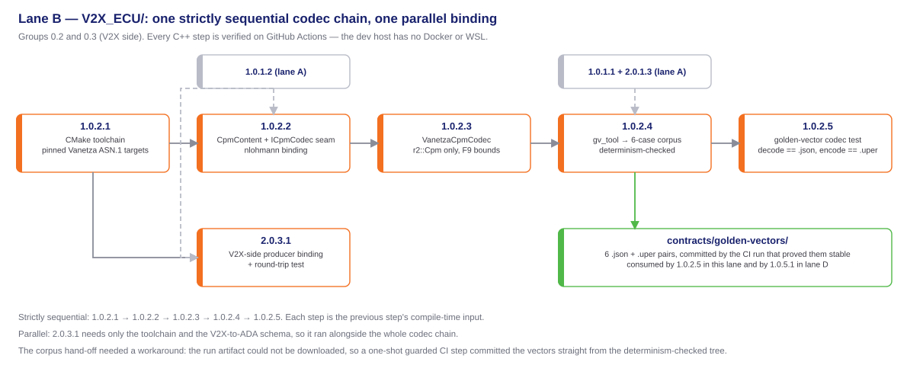
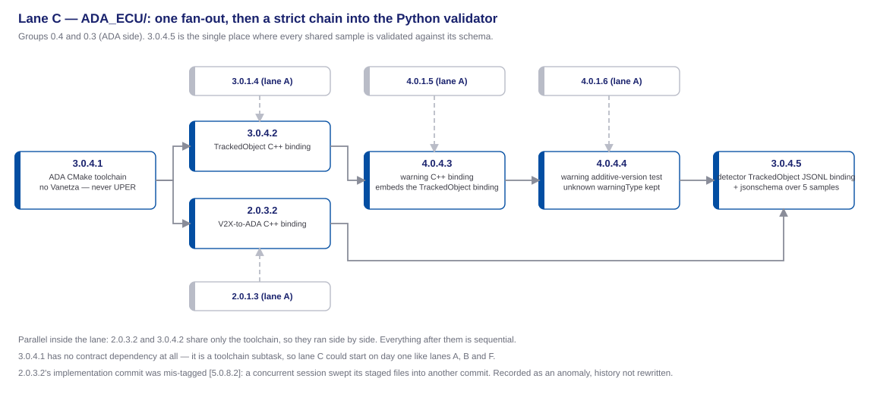
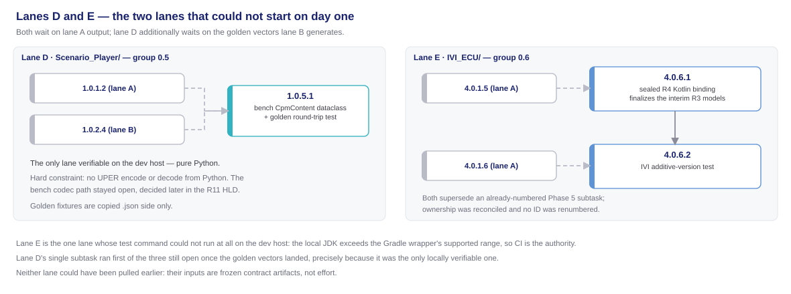
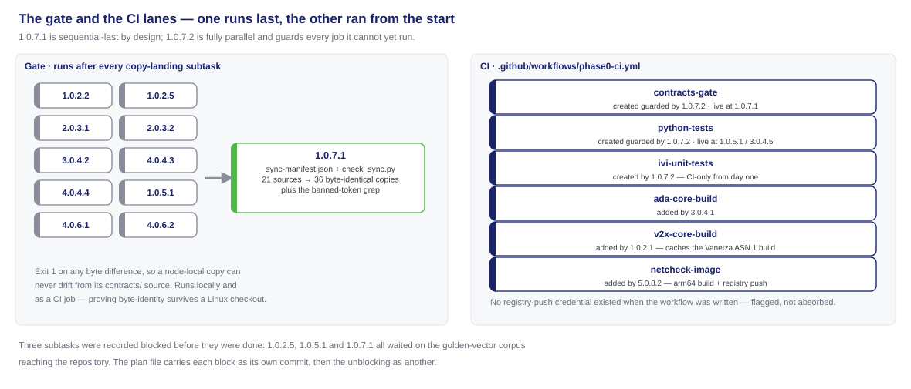
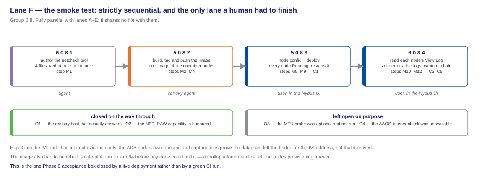

track, execution lane, CI lane, and why they are not interchangeable
the ID scheme, and the shape of Phase 0
which lane each group builds, and who consumes it
the files Phase 0 put in the repository
lane by lane, one diagram at a time
and what forced each
what Phase 1 was allowed to assume
Phase 0 and Phase 1 both use the word lane — for two different things. Neither of them is a track.
| Term | What it groups | Defined in | Example |
|---|---|---|---|
| Track | a workstream of whole phases, run by different people at the same time | milestone1.md §3 | comms track = Phase 1 |
| Execution lane | subtasks that must run in dependency order, grouped by the folder they write into | each phase plan's Execution order & parallelism | Lane B = V2X_ECU/ |
| CI lane | one job in the GitHub Actions workflow | .github/workflows/phase0-ci.yml | v2x-core-build |
A track is a workstream that belongs to people and runs for weeks. Three of them run at once — possible only because Phase 0 first froze the contracts.
| Track | Phases | Builds against |
|---|---|---|
| Comms | 1 | real V2X messages on the wire from the start; mock perception contents until Phase 6 |
| Perception (ADA) | 2, then 3 ∥ 4 | the tracked-object store — detection writes its own entries, fusion consumes the store and the live message from the V2X ECU |
| Display | 5 | mock warning messages from the start |
One contract freeze, three tracks running side by side, one convergence.

Every lane in both phases. A lane is named after the folder it writes into, so no two touch the same files.
| Phase | Lane | Writes into | Waits on | What the lane lands |
|---|---|---|---|---|
| 0 | A | contracts/ | nothing — it is the source | the message profile, all four schemas, shared samples |
| 0 | B | V2X_ECU/ | A, from its codec steps on | C++ toolchain, the codec seam, the six reference messages |
| 0 | C | ADA_ECU/ | A, from its bindings on | ADA toolchain and its C++ and Python message bindings |
| 0 | D | Scenario_Player/ | A and B | the bench-side message dataclass and its round-trip test |
| 0 | E | IVI_ECU/ | A | the Kotlin bindings the display decodes into |
| 0 | F | the live blueprint | nothing | the baseline connectivity smoke test, run on the platform |
| 1 | V | V2X_ECU/ | Phase 0's contracts | receive pipeline, composition root, node image |
| 1 | P | Scenario_Player/ | Phase 0's contracts + codec seam | the bench application and its codec helper |
| 1 | D | the deployed Room | V and P | push the images, deploy the blueprint, read the logs to confirm messages arrive |
The dev host has no Docker and no WSL. Every Linux build, every C++ compile, every Gradle run therefore happens on GitHub Actions: CI is not a safety net here, it is the verification path.
contracts-gate · python-tests · ada-core-build · v2x-core-build · v2x-comms-check · sp-codec-helper · ivi-unit-tests · netcheck-image · v2x-ecu-image · scenario-player-image.phase0-ci.yml defines jobd on GithubAction. Phase 1 added four jobs to it instead of starting a second workflow Every task and subtask carries X.Y.Z.W.
| Segment | Reads as | In 2.0.3.1 |
|---|---|---|
X | the requirement served | the V2X-to-ADA object message |
Y | the phase | 0 — the contract freeze |
Z | the task group | group 0.3 — V2X-to-ADA bindings |
W | the subtask | the V2X-side binding, one commit |
The group number is not the requirement number. 2.0.3.1 and 3.0.4.2 sit in different groups and serve different requirements; a group can hold subtasks from several requirements, which is why group 0.3 contains both 2.0.3.1 and 2.0.3.2.
contracts/ 6 · lane B V2X_ECU/ 6 · lane C ADA_ECU/ 6 · lane D Scenario_Player/ 1 · lane E IVI_ECU/ 2 · lane F smoke test 4 · plus the integrity gate and the CI workflow, one subtask each.**Status:** line in the plan file is not started.Left: what must happen, in what order. Right: what proves it happened.

| Acceptance box | Closed by | Proof |
|---|---|---|
| V2X message profile committed; the reference messages encode and decode through the codec seam | 1.0.1.1 · 1.0.1.2 · 1.0.2.1–1.0.2.5 | the v2x-core-build lane green — all six reference messages decode to their readable form and re-encode to exactly the same bytes |
| V2X-to-ADA, tracked-object and warning schemas committed; round-trip tests pass in C++, Python and Kotlin | group 0.1 schemas + six round-trip suites across groups 0.3–0.6 | the contracts-gate lane green, over all 36 synced copies |
| The warning-message additive-version test is defined | 4.0.1.6 · 4.0.4.4 · 4.0.6.2 | the ada-core-build lane green — one shared fixture, both consumers |
| Blueprint topology documented and validated | 6.0.8.1 · 5.0.8.2 · 5.0.8.3 · 6.0.8.4 | a live deployment, not a CI run: 5/5 nodes Running, criteria C1–C5 met |
| Task group | What it delivers, and which lane it serves |
|---|---|
0.1 — contract source of truth, contracts/ | Writes the V2X message profile document plus all four message schemas and shared samples. Implements lane A. Its files are the compile-time input of every other lane and of every binding written after Phase 0. |
| 0.2 — V2X ECU toolchain, codec seam, reference messages | Brings up the C++17 build, freezes the single V2X codec source, generates the six reference messages. Implements lane B. Phase 1's receive pipeline decodes through this seam; the bench encoder helper reuses the same sources. |
| 0.3 — V2X-to-ADA bindings, both C++ ends | One handwritten binding per node, producer and consumer. Splits across lanes B and C — 2.0.3.1 in V2X_ECU/, 2.0.3.2 in ADA_ECU/. Phase 1 forwards that message with exactly these bindings. |
| 0.4 — ADA ECU contract layer | ADA toolchain, tracked-object and warning C++ bindings, the additive-version test, the Python detector binding. Implements lane C. Phase 2 extends the tree; Phases 3 and 4 meet across the tracked-object struct. |
| 0.5 — Scenario Player contract layer | The bench-side CpmContent dataclass and its golden round-trip test. Implements lane D. Phase 1's bench starts here — and it deliberately stops short of an encoder. |
| 0.6 — IVI Kotlin warning and snapshot bindings | The sealed Kotlin warning binding and the finalized tracked-object snapshot models. Implements lane E. Phase 5's HMI decodes into these models instead of defining its own. |
| 0.7 — contract integrity gate and CI | The byte-identity gate over every synced copy, and the Linux verification workflow. Implements the gate and the CI lanes. Every later subtask in the project is verified by this file. |
| 0.8 — baseline connectivity smoke test | Builds, pushes, deploys and reads the netcheck tool on the live blueprint. Implements lane F. It is why Phase 1 could assume a deployable Room and reachable nodes. |
| File group | Delivered by | Purpose |
|---|---|---|
contracts/ — r1-cpm-profile.md, four JSON Schemas, five shared samples | group 0.1, subtasks 1.0.1.1 through 4.0.1.6 | The single source of truth every node copies from. It freezes, and re-freezes, as one unit. |
contracts/golden-vectors/ — six readable + encoded pairs | 1.0.2.4 | The reference messages: each one's content, plus the exact bytes it must encode to. Generated by a build-only tool, and published by the CI run that proved regenerating them is byte-stable. |
contracts/sync-manifest.json + check_sync.py | 1.0.7.1 | Maps 21 sources onto 36 node-local copies and exits 1 on any byte difference; it also carries the banned-token check over the V2X sources. |
.github/workflows/phase0-ci.yml | created by 1.0.7.2; lanes added by 1.0.2.1, 3.0.4.1, 5.0.8.2 | The build-configuration workflow — the project's Linux verification path, where C++ builds, Gradle tests and image builds actually run. |
tools/netcheck/ — Dockerfile, entrypoint.sh, capture.sh, netcheck.py | 6.0.8.1 | The netcheck tool: one throwaway image, three container roles, self-starting at node start with no manual exec. |
| File group | Delivered by | Purpose |
|---|---|---|
V2X_ECU/src/codec/ — cpm_codec.hpp, vanetza_cpm_codec.{hpp,cpp} | 1.0.2.2, 1.0.2.3 | The V2X library files: the codec seam interface and its only implementation over the ITS-r2 CPM type. Nothing above the seam converts units. |
V2X_ECU/src/contracts/r2_message.{hpp,cpp} + V2X_ECU/contracts/*.schema.json | 2.0.3.1, 1.0.2.2 | The V2X message-definition files: the V2X-to-ADA producer binding and the synced schema copies it is written against. |
V2X_ECU/CMakeLists.txt · tools/golden_vectors/main.cpp · tests/ | 1.0.2.1, 1.0.2.4, 1.0.2.5 | Toolchain with exact dependency pins, the generator that never ships in the node image, and the tests that hold every reference message to its exact bytes. |
ADA_ECU/ — CMakeLists.txt, src/contracts/ for all three messages, detector/contracts/tracked_object.py | group 0.4 plus 2.0.3.2 | The ADA skeleton: the consuming end of the V2X-to-ADA message, the producing end of the warning message, and the tracked-object line shape the Python detector subprocess will speak. |
Scenario_Player/player/contracts/cpm_content.py + golden .json fixtures | 1.0.5.1 | The bench side of the codec seam as a stdlib dataclass — model only, no encoder, by explicit constraint. |
IVI_ECU/app/.../model/R4Message.kt + finalized R3Snapshot.kt and SceneGeometry.kt | 4.0.6.1, 4.0.6.2 | The IVI skeleton's data layer: the sealed Kotlin binding the HMI decodes into, including its lenient handling of unknown warning types. |
Horizontal position is dependency depth, not calendar time — how far a piece of work sits from the start of the phase.

contracts/ writes documents and schemas, so it depends on no build and no toolchain. It splits into two chains that never touch each other: the V2X message profile feeding the bench and V2X-to-ADA schemas, and the tracked-object schema feeding the warning schema and its additive-version fixture.

Each codec step compiles against the previous one, so the chain admits no shortcut. The V2X-to-ADA binding needs only the toolchain and its schema, so it ran alongside the whole chain rather than after it.

The two message bindings share only the CMake setup, so they ran side by side. Everything after them is strictly ordered: the warning message embeds the tracked-object record, the additive test needs the warning binding, and the Python validator needs all four.

Neither lane was slow; both were blocked on frozen artifacts. Lane D needed the reference messages that lane B generates, lane E needed the warning schema and its additive fixture. That is the cost of contract-first, and it is paid once.

The integrity gate is the one subtask deliberately scheduled last: it fails on a missing target, so it can only run once all ten copy-landing subtasks exist. The CI workflow is the opposite — it landed on day one and guarded every job it could not yet run.

Fully parallel with everything else, because it shares no file with any node folder. Internally it admits no reordering at all, and its last two steps are Nydus UI work the plan tracks but no agent performs.

| Relationship | What it covers | What forces it |
|---|---|---|
| Parallel — across lanes | A, B, C, F and CI all start with no predecessor | They write disjoint folders: contracts/, V2X_ECU/, ADA_ECU/, tools/netcheck/, .github/. No shared file, no ordering |
| Parallel — inside lane A | 1.0.1.1 against 3.0.1.4 | The tracked-object schema references neither the V2X message nor the V2X-to-ADA message, so the two chains are independent from the first minute |
| Parallel — inside lane B | 2.0.3.1 against the whole 1.0.2.x chain | The V2X-to-ADA binding needs the toolchain and a schema, not the codec |
| Parallel — inside lane C | 2.0.3.2 against 3.0.4.2 | Different schemas, same toolchain, different files |
| Sequential — lane B | 1.0.2.1 → 1.0.2.2 → 1.0.2.3 → 1.0.2.4 → 1.0.2.5 | Each step is the next step's compile-time input; the reference messages cannot exist before the codec that writes them |
| Sequential — lane F | 6.0.8.1 → 5.0.8.2 → 5.0.8.3 → 6.0.8.4 | You cannot push an image that has not been written, deploy a tag that was not pushed, or read logs from a node that is not running |
| Sequential — last of all | 1.0.7.1 after all ten copy-landing subtasks | The gate walks a manifest and fails on a missing target, so partial runs are meaningless |
Phase 1's plan opens with an explicit input list. Every line of it is a Phase 0 deliverable — the handoff is a contract.
contracts/ with the reference messages, sync-manifest.json and check_sync.py; Phase 1 extended the manifest rather than re-deriving it.V2X_ECU/src/codec/ and src/contracts/ plus the CMakeLists.txt baseline — Phase 1's receive pipeline decodes through the same seam, and the bench's encoder helper is built from byte-synced copies of those sources.Scenario_Player/player/contracts/cpm_content.py and the golden .json fixtures.tools/netcheck/ ran on real nodes, so Phase 1 planned deployment tasks instead of re-proving the bridge.contracts-gate, python-tests, v2x-core-build, ada-core-build, ivi-unit-tests, netcheck-image — Phase 1 added four more to the same workflow file without rewriting it.1.0.5.1 was explicitly forbidden from improvising one; the decision belongs to the bench design, and that is where it was made.Phase 0 — Task Execution · Milestone 1 · FPT Hackathon 2026